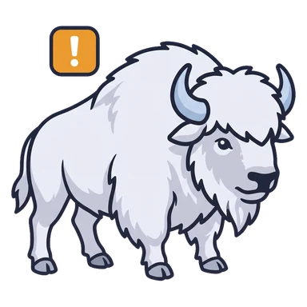
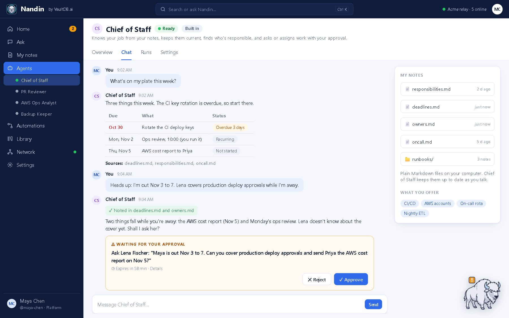
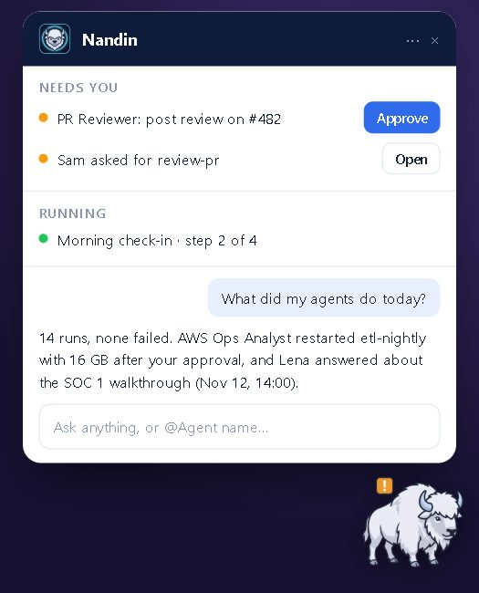
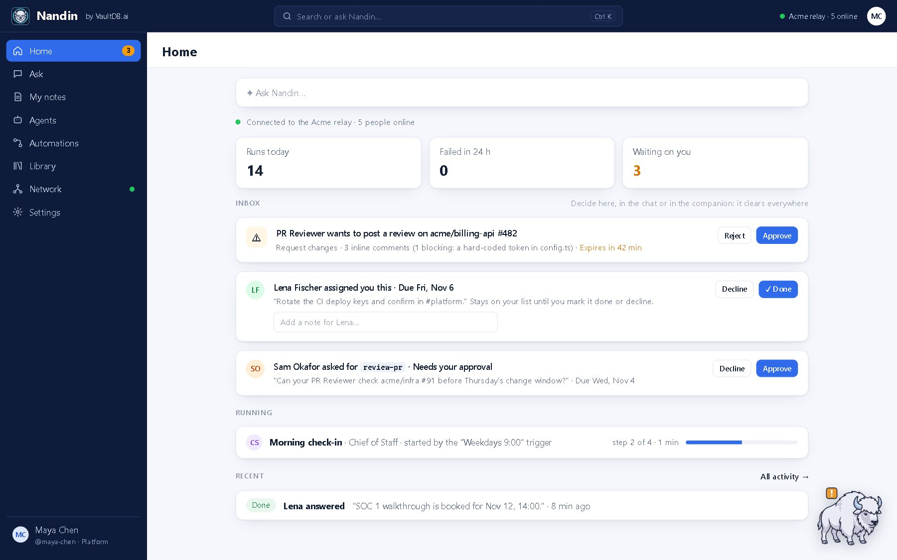
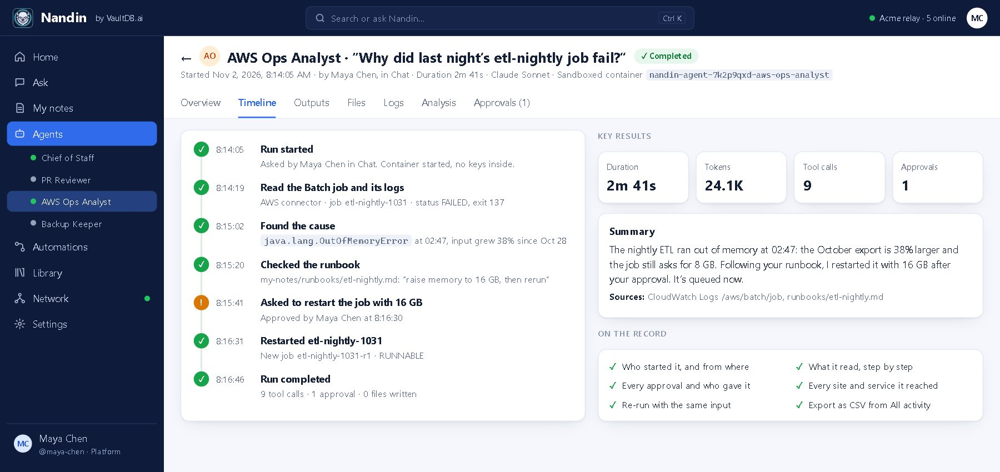
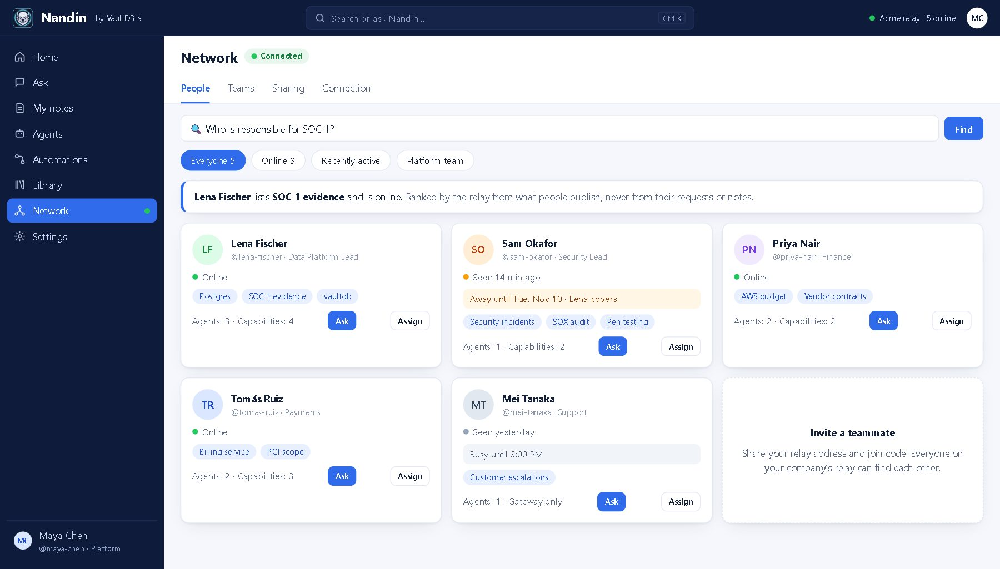
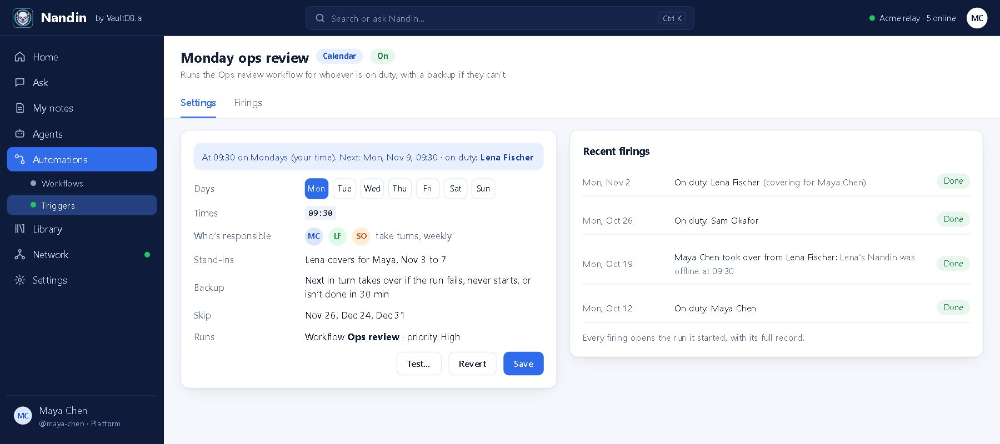
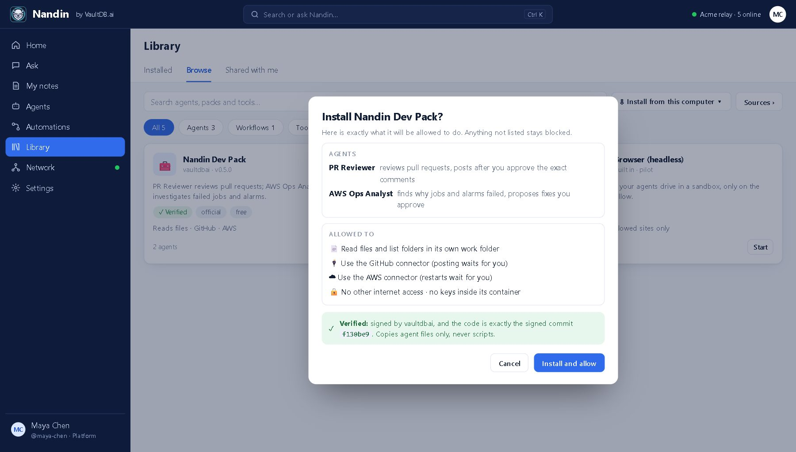
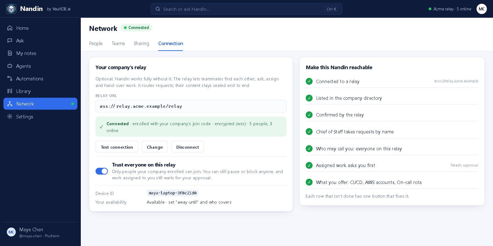

Nandin by VaultDB.ai
Your team's know-how, written down and put to work
It stays with your company, even when people move on. Safely, one task at a time.
Everyone on your team gets a Chief of Staff that learns their job, and agents that do the legwork in sealed containers on your own machines. Anything risky waits for a person's approval, and every run is on the record, kept by your company.
Free and open source (Apache-2.0). Windows, macOS and Linux. Requires Docker.

Your Nandin, right now
Nothing needs you. Nothing is running.

- Runs on your machines
- Agents only in sealed containers
- Approval before action
- Every run on the record
- Works without any server

The problem
AI can now do much of the work. It can't reach it.
The know-how of how work is actually done lives in people's heads, and they have no safe way to hand it over.
- It isn't written downThe steps, the exceptions and who to ask live in people's heads, chat threads and meetings.
- There's no safe handoverPasting work into a public chatbot leaves no approval, no record, and data outside the company.
- It leaves when people doEvery departure resets the clock, and what wasn't written down is gone.
Why AI programs stall
Every approach today skips the people who know the work.
-
Top-down AI programs
Leaders and consultants choose the use cases, and IT builds them.
The people who know the work aren't building it, so it stalls at the pilot.
-
Chatbots and copilots
They help one person in the moment.
Nothing is captured or owned, and trust never grows.
-
RPA and workflow tools
They need the process mapped up front by specialists.
That map is the know-how nobody has written down.
-
Wikis and search
They find what's already written.
Nobody writes it, and what's written goes stale.
Nandin's answer
The people who do the work turn it into AI, and the company keeps it
- CaptureSomeone describes a task once, because that's easier than doing it again.Know-how written down
- Run, with a person in chargeThe agent does the work; anything risky waits for approval.Hours back
- ProveEvery run, approval and result is recorded and can be replayed.Evidence
- OwnAgents, steps and history belong to the company, not the person.Survives leavers
- ConnectWhat one person captures becomes a capability anyone can ask for.No ticket queue
- ScaleJobs that prove themselves run on schedules and triggers, with fewer stops.Capacity without headcount
1 · Capture
It learns the job by working alongside you
Each person's Chief of Staff keeps their notes as they talk: what they own, deadlines, decisions, who to ask, runbooks. They're plain Markdown files on your computer that anyone can read and edit.
- Built in. Chief of Staff comes with Nandin, first under Agents. New here? Say hello and it asks a few questions and writes your first notes.
- Keeps up. Tell it what changed ("the walkthrough moved to Nov 19") and it notes it in the right file, says where, and raises what's coming up: overdue items, this week's deadlines, notes that disagree.
- Answers with sources. Every answer names the notes it used. When the notes don't know, it says so instead of inventing a name.
- Private stays private. Anything in a
private/folder is never used to answer a teammate.
You typeWhat's on my plate this week?
You typeHeads up: I'm out Nov 3 to 7. Lena covers deploy approvals.

2 · Run
It does the work. A person stays in charge.
Anything that changes something waits for an approval card that says exactly what will happen. Decide it in the chat, the Inbox or the companion, and it clears everywhere.

-
Approval before action
A waiting agent is paused, not spinning: it uses no tokens, and the approval survives a restart. Nobody deciding within an hour counts as no.
-
Sealed containers
Agent code runs only in its own container: no keys inside, no direct network, and only the sites allowed for it, through a proxy that logs every request.
-
Tracked until done
Every request is tracked until it's done or declined, with due dates and what's overdue. Ask "What am I waiting on?" any time.
3 · Prove
Every run is on record
Open any run and step through it: who started it, what it read, each step and tool call, the approvals and who gave them, and the result. Re-run it with the same input.
- Audit logs on your machine for model calls (model, tokens, cost; never prompt text), internet requests, triggers, pilots, connectors and delegations.
- All activity lists every run and request, both ways, filterable, with Export CSV.
- Ask about a run ("why did step 3 fail?") from its Analysis tab.

4 · Own
The company owns the work
Backed up, auditable, replayable. What people build with Nandin is the company's, and it stays when they move on.
-
Plain files in a git repo
Agents, workflows, triggers and connector settings are files you can read, diff and review. Nandin's database is only a cache of them and can be rebuilt any time.
-
Backed up to your remote
Settings › Backup pushes the repo to your company's git remote and restores from it on a new machine. Secrets never go in it: files hold references, keys stay in the OS keychain.
-
Survives leavers
Keep notes in a company folder and a successor picks up the same notes, agents and responsibilities. The relay's operator revokes a leaver's device at once.
5 · Connect
What one person captures, everyone can ask for
Everyone publishes what they own, so there's no directory to keep up. Ask instead of filing a ticket: your Nandin finds the owner and asks their Nandin, which answers from their notes or does the work, with a person approving.

-
Who's responsible?
Ask "who is responsible for the SOX audit?" and get the person, from what people publish, with whether they're online.
-
Ask and assign
"Assign Lena: send the evidence list, due Friday." It lands in her team inbox with the due date, stays until she clicks Done or Decline, and her note comes back to you.
-
Away, and who covers
Set "away until" and who covers. Teammates see "Away until Tue, Nov 10 · Lena covers", and requests reach you when you're back.
-
Reassign and hand over
Swamped? Reassign a task to a teammate who serves the same thing, without the asker sending it again. Duties on a calendar hand over to a backup by themselves.
-
Agents that help each other
Send a pull request to a teammate's PR Reviewer: it reviews on their machine and the findings come back to you. Each owner decides who may call their agents.
-
Your rules on trust
Everyone your company enrolled on its relay is trusted by default. Pause or block anyone, and work assigned to you still waits for your approval.
These need your company's relay (below). Everything else in Nandin works on its own.
6 · Scale
Proven jobs run on their own schedule
Start supervised: new agents ask before every command. Once a job has a clean record, relax its approvals and give it a trigger. Asking or assigning anyone still waits for a person.
- Workflows chain agents step by step, with steps that wait for a person to sign off and steps that ask a colleague and wait, for days if needed.
- Triggers start them on a schedule, when a file changes, from a webhook or a device, when another run finishes, or on a duty calendar.
- Duty calendars know who's on duty each day (turns, stand-ins, days off) and hand over to a backup when the run fails or never starts.
- Nothing runs unless something starts it. Between runs no agent watches anything and no model is called.

Meet the bison
Nandin lives in a corner of your screen, above your other apps. One look tells you whether anything needs you. Click it to approve, answer, or ask what your agents did today.
- RestingNothing needs you. It breathes, dozes, and now and then gets up for a stretch.
- Waiting on youAn approval is pending. It looks at you and swishes its tail.
- Carrying workAgents are running. It walks along with the crates on its back.
- DoneYou approved. The check pops in and it nods.
Prefer it still? Settings › Appearance › Bison moves. It also holds still when your system asks for less motion.
Ready-made agents, signed by their publisher
Install starter packs from the Nandin registry, or from a folder or .zip on your computer with no
internet at all. Before anything installs, you see exactly what it will be allowed to do.
-
Built in
Chief of Staff
Knows your job from your notes, finds who's responsible, asks and assigns with your approval, and tracks what's open. Comes with Nandin; change its rules any time.
-
Nandin Dev Pack
PR Reviewer and AWS Ops Analyst
Reviews pull requests (private repos too) against your rules and posts after you approve the exact comments. Finds why AWS jobs and alarms failed, with evidence, and proposes a fix you approve.
-
Nandin Personal Backup
Backup Keeper
Backs up the folders you choose to your own S3 bucket as Glacier Deep Archive, as they change and nightly, and sets up the AWS side with you, one approval at a time.

Tools and models, on your terms
Give each agent only what its job needs. Company sign-in first, your own keys if you like, local models when prompts must stay in-house.
-
Connectors and MCP
GitHub, AWS, S3 Backup and shared folders built in, and any service with an MCP server (Outlook, Slack, Jira, a database). Tokens stay in your keychain, calls run on your computer.
-
Browser pilots
An agent drives a real browser, in a window you can watch or headless in a sandbox, only on its allowed sites. Clicking, submitting and paying wait for your approval.
-
Web search without a key
Built-in search needs no account or API key, and only returns and reads pages on the sites the agent is allowed to reach.
-
Your choice of models
Claude through your Claude sign-in or key, OpenAI and DeepSeek with your own keys, Amazon Bedrock through AWS SSO, and Azure AI Foundry or a LiteLLM gateway set once for the whole team. Local models through Ollama are experimental.
-
Coding agents, contained
Run Claude Code, Codex or Gemini CLI as an agent's engine. They always run in a container, under the same allowed sites and approvals.
-
Free tokens to start
Nandin comes with 100,000 free tokens on DeepSeek Flash, so you can start without a key. They switch off once you set up your own model.
Private by design
Agents get exactly what you approve, and nothing else.
Agents read your files, use your accounts, and act for you. That work belongs on machines you control, under rules you can read, with a record you keep. There's no VaultDB server in the middle.
-
Credentials never go inside
Model keys, tokens and cloud credentials live in your OS keychain. A proxy on your computer adds them on the way out, so containers never see them.
-
Only allowed sites
Containers reach the network only through the egress proxy, which allows the sites set for each agent, refuses the rest, and logs both.
-
Hardened containers
A non-root user, every Linux capability dropped, a read-only root, and memory and process limits. An agent sees its own folders and nothing else on your disk.
-
Consent for installed agents
An agent from the registry can't run until you allow each thing it asks for. It installs read-only, with scripts stripped out.
-
Your records stay with you
Run history, approvals and logs stay on your machine. What leaves: the model calls you chose, the sites you allowed, pushes to your own git remote, and, if you connect one, requests through your company's relay.
For teams
Works alone. Better with your company's relay.
Nandin is fully usable on its own: agents, Chief of Staff, workflows, triggers, approvals, backups and starter packs all work with no relay. To connect teammates, your company runs its own relay: a small server, one per company, on a machine everyone can reach.
- Self-hosted. A Docker image or a Helm chart. It keeps the member directory (names, what people own, availability) and passes requests through; it doesn't store what people ask or answer.
- Only your people. Staff enroll with a join code you hand out, over
wss://with your certificate or behind your TLS proxy. Revoke a device when someone leaves. - Free for up to 20 users. More with a licence file from VaultDB.ai (see licensing below).
Run a company relay
export NANDIN_RELAY_SECRET=$(openssl rand -hex 32) # keep it secret
export NANDIN_RELAY_JOIN_CODE=<a code you give your staff>
docker run -d --name nandin-relay -p 8787:8787 \
-e NANDIN_RELAY_SECRET -e NANDIN_RELAY_JOIN_CODE \
-v nandin-relay-data:/data \
ghcr.io/vaultdbai/nandin-relay --data-dir /dataThen in Nandin: Network › Connection, enter the relay's address and join code. For TLS, licence files and backups, see the relay README.

Licensing, in plain words
The app is open source. The team relay is source-available and free for smaller organisations. The formats and starter packs are yours to reuse.
-
Apache-2.0
The Nandin app
Open source under the Apache License 2.0: use it, change it and ship it, at any size, for free.
The Nandin name, the bison and the logos are trademarks of VaultDB.ai and aren't covered by the Apache licence. Run official builds as they are; a fork must use its own name and artwork.
-
BUSL-1.1
The Nandin relay
Source-available under the Business Source License 1.1. Free in production when your organisation (with its affiliates) has up to 20 users, runs one active relay plus one standby, and doesn't offer it as a competing hosted service. AI agents don't count as users.
Each version becomes Apache-2.0 four years after its release. More users need a licence file from VaultDB.ai: licensing@vaultdb.ai.
-
MIT
Spec, registry and starter packs
The open formats and relay protocol, the registry index, and the starter packs are MIT licensed. Copy, change and share them freely.
The app has no licence keys, seat checks or nags. The 20-user limit lives only in the relay, and people already on a relay are never cut off.
Download Nandin
Installers for every platform are on GitHub Releases.
- Requires Docker. Docker Desktop on Windows and macOS, Docker Engine on Linux. Agents' sandbox images are set up from Settings › Models & runtimes.
-
Running a team? The relay is a separate container image,
ghcr.io/vaultdbai/nandin-relay(how to run it).
Part of the VaultDB family
VaultDB also makes an in-process database for IoT devices and model training, with VaultDB HUB for central storage and governance.
Frequently Asked Questions
A desktop app that gives each person a Chief of Staff and a team of AI agents. The Chief of Staff learns your job from your notes and works with your colleagues' Nandins; agents do the legwork in sealed Docker containers on your machine. You approve anything risky, and every run is recorded.
No, on purpose. It runs only when something starts it: you message it, a teammate's agent asks it something, or a trigger fires. It updates your notes only while you talk to it. To have it check in by itself, add a schedule trigger, for example weekdays at 9:00.
Only where you send it. Prompts go to the model provider each agent uses (or stay on your machine with a local model). Containers reach only the sites you allowed, and every request is logged. Definitions, run history and logs stay on your machine unless you back them up to your own git remote.
No. Everything works on one computer. Only person-to-person features (asking or assigning a teammate, the team inbox, reassignment and handover, finding owners and who's online) need your company's relay, which you host yourself.
Claude (with your Claude sign-in or an Anthropic key), OpenAI and DeepSeek with your own keys, Amazon Bedrock, Azure AI Foundry or a LiteLLM gateway, and local models through Ollama (experimental). New installs come with 100,000 free DeepSeek Flash tokens.
Agents run only in containers, so a misbehaving agent can't touch your files, other agents or your keys. Use Docker Desktop on Windows and macOS, or Docker Engine on Linux.
The app is free and open source (Apache-2.0). The relay that connects teammates is free for organisations with up to 20 users; beyond that, contact licensing@vaultdb.ai for a licence file. You pay your model provider for model calls.
Only what you allow. Your agent must accept requests, and you decide who may call it: allow, ask or deny. Work assigned to you always waits for your approval in your Inbox, and you can pause or block anyone.